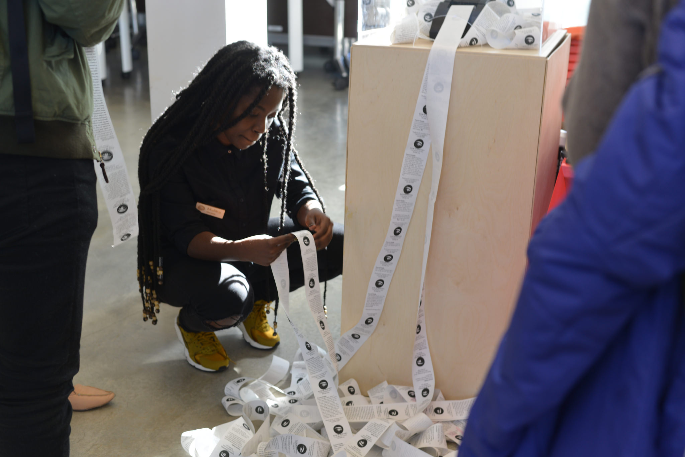

Critical Practices
Teaching Assistant

A hands-on, studio design course where students work at the intersection of technological innovation and socially engaged art. My role as teaching assistant allowed me to lead lectures, execute lesson plans, as well as guide students through one-on-one advising and consulting.
Team
Mitchell Karchemsky
Jill Miller
My Role
Produce Lesson Plans
Lead Lectures
Provide Critique
Assist in Grading
Methods
Sketching
Prototyping
3D CAD
Digital Fabrication

The Course
Critical Practices is taught under the Berkeley Center of New Media. A hybrid course which focuses not only on the history and theory behind revolutionary installations and pieces, but invites the students to practice. As evident in the course title, a core tenant of the class is the critical view which must be taken by the students to embrace and offer cultural critique through the use of art.
A Critical Lens
The focus of the course is to use art to help guide and shape social discourse. We encouraged the students to explore issue that affect them personally and use art as a way to bring people to more critically understand the issues surround the topic. For example, one group The Bank of Hysteria brought to light that almost exclusively is the word Hysteria is almost exclusively used only in descriptions of women. Coupled with the pressing issue of feminism, gender bias, and equality for women, the group wanted to create a space where those afflicted by the issue can verbalize their frustrations and discomfort without fear of recourse. They created a phone hotline and guerilla marketing campaign which gave an opportunity to those who felt that they could release the internal tension that they had kept hidden away. Their grievances are then printed out in a long receipt which others can read and connect with.

Another group was interested with the issue of self-encouragement and handling pressure. They distilled the problem that not enough self care is welcomed by individuals and as a result, will force emotions to be repressed. This starts a vicious cycle of self-neglect. To help address this, the students wanted to remove the stigma of consequences associated with these issues; specifically, crying. From a neurological standpoint, crying is an effective and necessary physiological function for our day to day lives; but from a social point of view, it is discouraged as it makes onlookers uncomfortable. To address this, the team created a tool which would actually encourage others to be comfortable to cry, and give tangible success from the release of the emotions. They created an organic sculpture which housed planters that would water themselves when a user would cry. This incredible message was driven even more firmly by the strong engineering talent to create the installation.
Design
In the course, we focus on using physical design as a medium of discourse. Although an upper-division course, we encourage students from all disciplines and backgrounds to participate in the course. This means that there is a wide bevy of different skill levels when it comes to designing and making. I teach several installments of how to go from an idea to a final product. This series of lectures covers ideation, sketching, feasibility of design, modeling, and fabrication.
With this skillset, we find that the multidisciplinary talents of each student allow for interesting unique ideas from the crosspollination of subject matters.
Reflection
This course is incredibly rewarding to me from a personal standpoint. It allows for me to explore ideas with students and better understand the social issues they face and are victim to and help them better call to attention the issues which they face. I am incredibly proud that I was able to work so closely with these students and guide them to not only be better thinkers, but better makers, and shapers for social good.
Case Studies
Selected Works

Bifröst
Better Embedded Systems Debugging
Berkeley Institute of Design. How do we better instrument embedded systems for combined software and hardware debugging?
Read Me
Dalmatian
How can we make firefighters safer?
Technology startup focused on creating a safer more effective workforce for firefighters through the use of on-person telemetry units.
Read Me
Heimdall
Remote debugging of embedded systems
Berkeley Institute of Design. How do we enable remote intuitive debugging for teachers to help beginners design embedded systems projects?
Read Me
Wifröst
Wi-Fi Embedded Systems Debugging
Berkeley Institute of Design. How do we use instrumented hardware to better debug network enabled IOT embedded systems?
Read Me
Within2
How do we create music we can feel?
Collaboration with Meyer Sound, The Berkeley Center for New Media, and Artist Tarek Atoui. How do we create music for the hearing impaired?
Read Me
MakerPass
Hardware and Industrial Design
The MakerPass Authentication system allows for Maker-spaces to grant access to privilaged members in a low-cost, easy to implement solution.
Read Me
Doom Sense
How can we feel information?
An experiment in haptic feedback modalities and sensory extension. We improved the performance of a player by delivering curated contextual information
Read Me
Drill Sergeant
Hardware and Industrial Design
Berkeley Institute of Design. Drill Sergeant enables new makers to build confidence through self-guided interactive physical feedback driven tutorials.
Read Me
Strands
How can we feel information?
An experiment in haptic feedback and sound generation; allowing performers to explore timbre, pitch, and volume through physical interaction
Read MeTeaching Experience
Courses and Mentorship

Critical Practices
Teaching Assistant
A hands-on, studio design course where students work at the intersection of technological innovation and socially engaged art.
Read Me
Design Innovation 22
Teaching Assistant
This introductory design course teaches concepts, skills, and methods required to design, prototype, and fabricate physical objects.
Read Me
Invention Lab
Technical Design Mentor
The Invention Lab is a UC Berkeley makerspace focused on helping students, researchers, and faculty to make embedded systems inventions.
Read Me